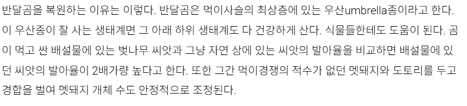
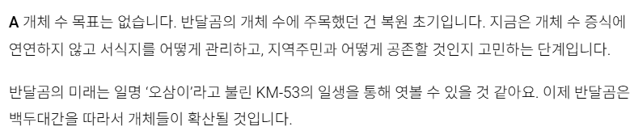

https://san.chosun.com/news/articleView.html?idxno=23622
복원까진 이해가는데 대체 산에 왜 다풀어버리는거지?


https://san.chosun.com/news/articleView.html?idxno=23622
복원까진 이해가는데 대체 산에 왜 다풀어버리는거지?
우리는 등산객들이 꼴보기 싫으니 산에다 곰을 풀어보겠습니다
내가 시발 초딩때 촌에서 컸는데 아직도 초6때 방과후 활동 (강제) 후 집 가는 길에 만난 맷형님과의 조우가 잊혀지질 않는다
오.. 맷 데이먼을 만나다니
트로이에서 한판 하셨다나 뭐라나... 꽐라 되시더니 다음날 홀로 없어짐 ㅠㅠ
마티즈가 굴러다닌다안카요

아니 공존을 고민하는 단계는 복원시작 전부터 계획했어야되는거 아니냐?
뭐 허락보다 용서받는게 더 쉽다 이거야?

그 때는 일제가 해수구제사업으로 싹 죽인 거 되돌려야 한다고 다들 미쳐 있었지
등산 : 익스트림 스포츠
실제로 미쿡에선 입산전에 곰스프레이 챙기라고 한다.... 곰만났을대 예방교육도 많이함..
??? : 왜 산에 푸냐니 그야.. 재밌으니까.. 그리고 나는 안죽으니까
수십년전에 새겨진 썩어 문드러진 신념을 다 늙어서 눈감고 귀닫고 실현해 나가는 것 뿐임
그걸 우린 노망났다고 부르기로 했어요
국민연금 정상화
풀어놓은 새끼들 다 반달곰 먹이로 줘야함
오삼불고기나 풀어라
순수하게 대가리꽃밭인 인간언저리가 키워낸 사업
최상위 포식자가 잘 사는 생태계면 생태계가 건강하다는 뜻이다 << 여기까진 학술적인 팩트임
그러니까 최상위 포식자를 풀어서 생태계를 건강하게 하자 << 이건 진짜 개멍청한 소리 아니냐???
미국에서 늑대가 없어지니 사슴이 엄청나게 불어나 생태계가 망가지니까 일부러 늑대 풀어서 사슴숫자 조절한 사례가 있긴 한데
그 위치가 뉴욕시 뉴저지 수준 위치였으면 아무도 찬성 안했을껄
불법올무 찾는건 반달곰 아니더라도 그냥 하면 되는거잖아.
반달곰 안풀어놓으면 절대 못하는 일인냥 말하노
반달곰보고 찾으라고 시킨거 아닐까
아니 포켓몬으로 사람 때려잡으면 주인이 문제인거 아니냐? 반달곰으로 사망사고 생기면 협회가 살인죄로 처벌받아야 한다고 본다
그니까 씨발아 2배 효과를 위해 그랬다는거잖아? 똥씨발아...
걍 저 협회새끼들 가족 몇명 반달곰 먹이나 되면 좋겠네
삵이나 풀던가 뭔 곰이여
개체수가 100여마리라 그렇지
피해당한 뉴스 여러차례 나왔고
이러다가 사망뉴스 뜨면 어쩌려고 싶은데
일본 처럼 입산 금지 때릴듯
뭐지 조현병인가
그래서 왜풀었냐고
우궹이문화를 복원하는게 진짜 목적인데
신종 바이러스에 감염됏나.. 왜 이 악물고 저러지
말하는게 횡설수설급인데?
그로인해 생길 문제는 싹 숨겼네
앞으로의 계획은 호랑이 복원사업입니다.
점마 집앞에도 두마리만 풀어보자
북한산에는 왜 안풀고?
우리 곰은 안물어요~
이제 유튭에서 보던 [ 곰이 일본 마을을 습격한 사건 ] 을 지리산에서 볼수 있는거네.
???? 뭔 소리임????